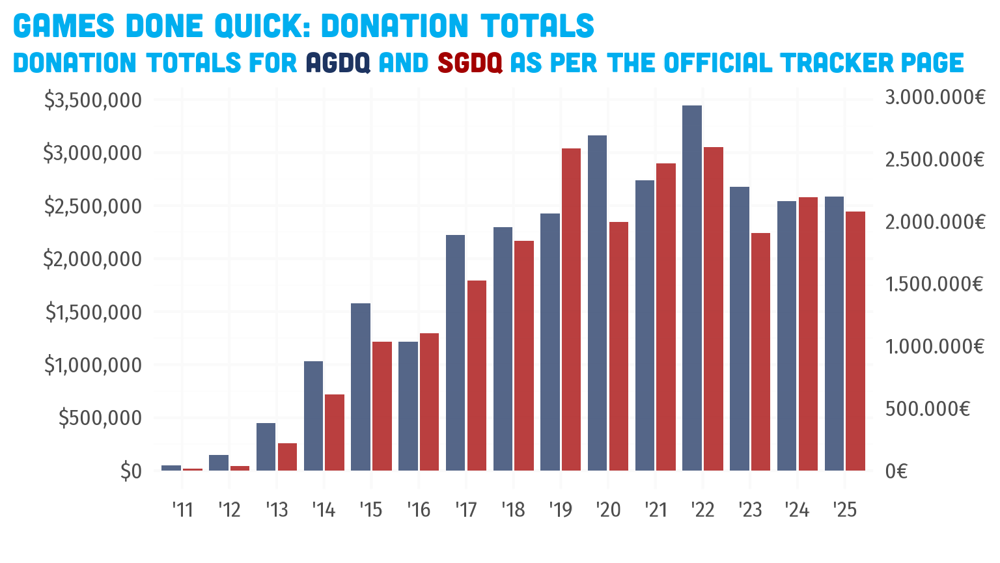
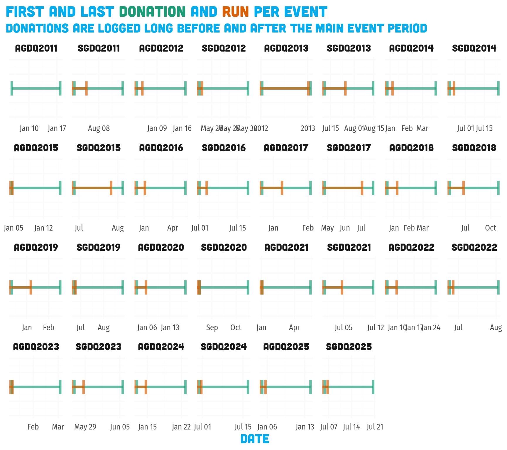
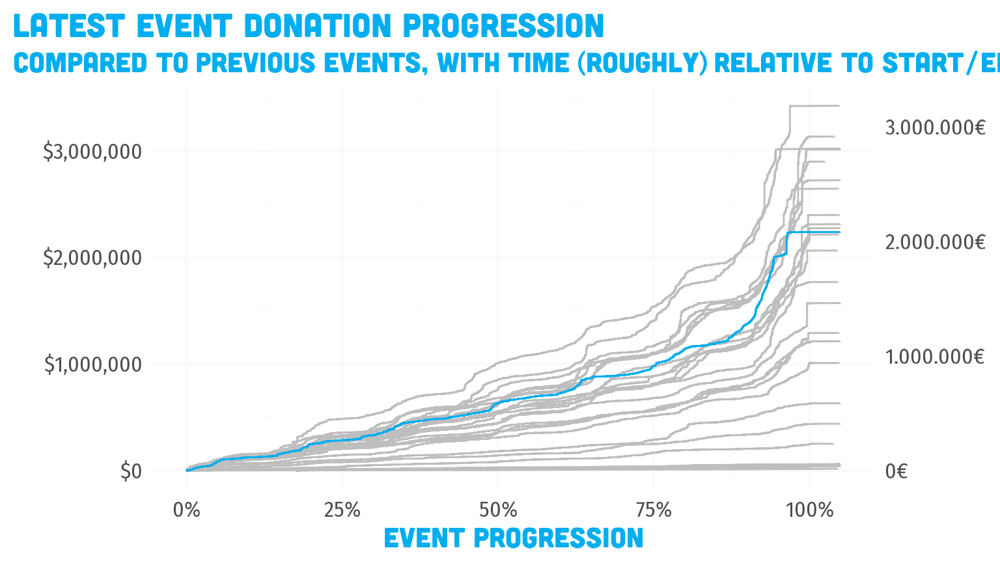

all-events.Rmd
library(gdqdonations)
library(dplyr)
#>
#> Attaching package: 'dplyr'
#> The following objects are masked from 'package:stats':
#>
#> filter, lag
#> The following objects are masked from 'package:base':
#>
#> intersect, setdiff, setequal, union
library(tidyr)
library(ggplot2)
library(kableExtra)
#>
#> Attaching package: 'kableExtra'
#> The following object is masked from 'package:dplyr':
#>
#> group_rows
donations <- gdqdonations::gdq_donations %>%
augment_donations()
runs <- gdqdonations::gdq_runs
gdq_donation_totals <-
donations %>%
group_by(event) %>%
summarize(
total = sum(amount),
avg = mean(amount),
gdq = unique(gdq),
year = unique(year)
) %>%
arrange(as.numeric(year)) %>%
mutate(cumtot = cumsum(total))
gdq_donation_totals %>%
ggplot(aes(x = year, y = total, fill = gdq)) +
geom_col(position = position_dodge2(preserve = "single"), alpha = .75) +
scale_x_year_discrete() +
scale_y_currency(
breaks = seq(0, 10e6, 5e5),
minor_breaks = seq(0, 10e6, 2.5e5)
) +
scale_colorfill_gdq(guide = "none") +
labs(
title = "Games Done Quick: Donation Totals",
subtitle = glue::glue("Donation totals for <span style='color:{gdq_pal[['AGDQ']]}'>AGDQ</span> and <span style='color:{gdq_pal[['SGDQ']]}'>SGDQ</span> as per the official tracker page")
) +
theme_gdq()
Unfortunately finding the proper “end time” is not that easy, since
the end time of the last run (or finale section) typically comes way
before the last of the donations have trickled in.
Also, the last “run” listed on the runs page is sometimes the finale,
sometimes the last game, sometimes an explicit total:?
full_join(
runs %>%
group_by(event) %>%
slice_tail(n = 1) %>%
select(event, run, run_end),
donations %>%
group_by(event) %>%
slice_tail(n = 1) %>%
select(event, amount, donation_time = time),
by = "event"
) %>%
arrange(donation_time) %>%
mutate(hours_since_end = (run_end %--% donation_time) / lubridate::dhours(1)) %>%
select(
event,
last_run = run, last_run_end = run_end,
last_donation = donation_time, amount,
hours_since_end
) %>%
kable() %>%
kable_styling()| event | last_run | last_run_end | last_donation | amount | hours_since_end |
|---|---|---|---|---|---|
| AGDQ2011 | NA | NA | 2011-01-17 20:27:17 | 0.80 | NA |
| SGDQ2011 | kingdom hearts 2 | 2011-08-06 23:07:31 | 2011-08-14 05:18:36 | 5.00 | 174.184722 |
| AGDQ2012 | final fantasy vii part 2 | 2012-01-07 17:15:00 | 2012-01-16 21:35:17 | 363.99 | 220.338056 |
| SGDQ2012 | bonus games | 2012-05-29 05:00:00 | 2012-05-30 04:40:46 | 1.00 | 23.679444 |
| AGDQ2013 | Bonus Games | 2013-02-03 21:35:44 | 2013-01-23 14:28:05 | 2000.00 | -271.127500 |
| SGDQ2013 | total: | 2013-08-11 06:00:00 | 2013-08-14 14:33:29 | 1500.00 | 80.558056 |
| AGDQ2014 | bonus stream | 2014-01-15 15:00:00 | 2014-03-24 19:46:02 | 5.00 | 1636.767222 |
| SGDQ2014 | Bonus Stream | 2014-06-29 12:46:00 | 2014-07-25 06:26:44 | 15.00 | 617.678889 |
| AGDQ2015 | Finale! | 2015-01-11 11:03:00 | 2015-01-15 21:14:47 | 50.00 | 106.196389 |
| SGDQ2015 | Finale! | 2015-08-02 06:38:04 | 2015-08-05 00:37:21 | 10.00 | 65.988056 |
| AGDQ2016 | Final Fantasy IV Any% no 64 floor glitch | 2016-01-10 08:02:14 | 2016-05-10 05:16:19 | 5.00 | 2901.234722 |
| SGDQ2016 | Super Mario 64 70 Star Encore 70 star | 2016-07-10 08:00:00 | 2016-07-18 21:45:31 | 35.00 | 205.758611 |
| AGDQ2017 | Undertale True Pacifist Ending | 2017-01-15 07:07:12 | 2017-02-03 02:30:16 | 6.00 | 451.384444 |
| SGDQ2017 | Earthbound Any% Glitchless | 2017-07-09 09:29:12 | 2017-07-22 20:12:35 | 50.00 | 322.723056 |
| AGDQ2018 | The Legend of Zelda: Breath of the Wild All Main Quests (No Amiibo) | 2018-01-14 09:54:07 | 2018-03-26 18:53:24 | 10.00 | 1712.988056 |
| SGDQ2018 | FINALE post-GDQ blues | 2018-07-01 07:50:54 | 2018-10-28 02:41:36 | 25.00 | 2850.845000 |
| AGDQ2019 | Finale! 100% | 2019-01-13 06:16:02 | 2019-02-16 22:47:40 | 11.50 | 832.527222 |
| SGDQ2019 | Finale The End | 2019-06-30 06:55:00 | 2019-08-27 03:21:43 | 25.00 | 1388.445301 |
| AGDQ2020 | Finale The End | 2020-01-12 07:51:00 | 2020-01-17 18:21:56 | 25.00 | 130.515556 |
| SGDQ2020 | Finale The End | 2020-08-23 07:42:00 | 2020-10-15 16:41:04 | 10825.00 | 1280.984444 |
| AGDQ2021 | Finale The End | 2021-01-10 09:52:00 | 2021-05-13 21:35:11 | 5.00 | 2963.719795 |
| SGDQ2021 | Finale The End | 2021-07-11 07:46:00 | 2021-07-11 11:45:15 | 300.00 | 3.987666 |
| AGDQ2022 | NA | NA | 2022-01-26 00:02:42 | 10.00 | NA |
| SGDQ2022 | NA | NA | 2022-08-02 19:52:12 | 77.00 | NA |
| AGDQ2023 | NA | NA | 2023-03-03 04:29:07 | 5.00 | NA |
| SGDQ2023 | NA | NA | 2023-06-05 14:37:12 | 10.00 | NA |
How about we compare first/last donation and first/last run times per event.
bind_rows(
runs %>%
group_by(event) %>%
summarize(
type = "run",
first = min(run_start, na.rm = TRUE),
last = max(run_end, na.rm = TRUE)
),
donations %>%
group_by(event) %>%
summarize(
type = "donation",
first = min(time, na.rm = TRUE),
last = max(time, na.rm = TRUE)
)
) %>%
arrange(first) %>%
mutate(
event = factor(event, levels = event_index$event)
) %>%
ggplot(aes(y = 0, xmin = first, xmax = last, fill = type, color = type)) +
facet_wrap(facets = vars(event), scales = "free", nrow = 4) +
geom_errorbarh(height = .5, size = 1.5, alpha = 2/3) +
scale_x_datetime(breaks = scales::pretty_breaks(n = 3)) +
scale_y_continuous(limits = c(-1, 1)) +
scale_color_brewer(palette = "Dark2", guide = "none") +
labs(
title = "First and Last <span style='color:#1B9E77'>Donation</span> and <span style='color:#D95F02'>Run</span> per Event",
subtitle = "Donations are logged long before and after the main event period",
x = "Date"
) +
theme_gdq(
axis.text.x = element_text(size = rel(.8)),
axis.line.y = element_blank(),
axis.text.y = element_blank(),
axis.title.y = element_blank()
)
Trying to reasonably determine start and end of the main event period to scale donation progress relatively.
donations %>%
filter(time_rel >= 0 & time_rel <= 1.05) %>%
group_by(event) %>%
mutate(amount_total = cumsum(amount)) %>%
ungroup() %>%
mutate(
highlight = event == latest_event()
) %>%
ggplot(aes(x = time_rel, y = amount_total, color = highlight, group = event)) +
geom_step() +
scale_x_continuous(labels = scales::percent_format()) +
scale_y_currency(breaks = scales::pretty_breaks()) +
scale_color_manual(
values = c("TRUE" = gdq_pal[["GDQ"]], "FALSE" = "gray"),
labels = c("TRUE" = latest_event(), "FALSE" = "Previous events"),
name = "",
guide = "none"
) +
labs(
title = "Latest event donation progression",
subtitle = "Compared to previous events, with time (roughly) relative to start/end of event",
y = "Cumulative donation total",
x = "Event Progression"
) +
theme_gdq()